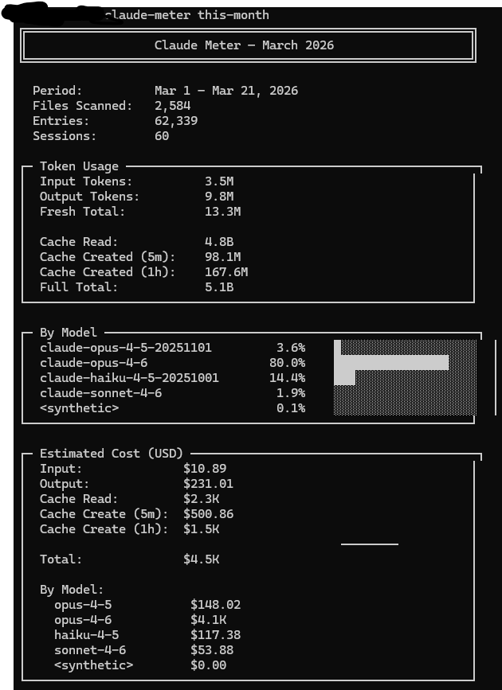
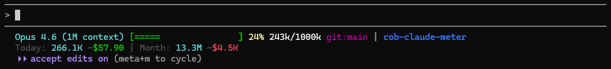

Know what your Claude Code usage costs — and how many hours you actually worked. Tokens, costs, and per-project work hours, from your terminal or a local dashboard.
Pay per token and your usage is itemised down to the cent. Pay a flat monthly fee for Pro or Max and that visibility disappears — you have no idea whether you used fifty dollars of compute this month or five thousand. Claude Meter prices the usage that is already sitting in your local logs at published API rates, so you can finally see it.
Your subscription price. Same every month, whatever you did with it.
The same month’s real token usage, priced at API rates from your own logs.
Anthropic does not publish per-token consumption for subscription plans, so nothing here can be reconciled against an invoice. Claude Meter reports what your usage would have cost at published API rates — a like-for-like yardstick for the value you are getting, not a statement of what you owe. On a subscription you owe the flat fee either way.
Claude Code times every turn, brackets every tool call, and writes all of it into your transcript.
Claude Meter reads those numbers straight out and takes their union. No timers to start, nothing to
remember, no clocking in. Run
claude-meter serve
and open it in your browser.
Hours by project
Daily timeline
Illustrative layout. Filter by client, project, or date range — wall-clock recalculates exactly
for whatever is on screen. Days you did nothing show as 0
rather than disappearing, and anything spanning more than one month folds into collapsible month rows.
0.5 read the duration Claude Code records for each turn, which fixed the twelve-minute build that older versions threw away as idle. But a turn is not the only thing that runs. Spawn a subagent, kick off a background job, and the work continues between turns — while you keep typing. None of it was counted.
Four subagents running in parallel for forty minutes sat outside every turn record, so they were worth nothing. Across two months of real logs, 5% of everything the agent did fell into that gap — about eighteen hours.
Turn durations, tool spans and log activity, merged onto one timeline. Overlap counts once. 71,870 tool calls in those logs, every one matched to its result — nothing guessed.
AskUserQuestion and plan-mode prompts are the
agent blocked on a human, so they are excluded by name. One of them in our own logs had been
sitting open for eight hours.
What is left is the ordinary permission prompt — approving a
Bash command. That tool call is open the whole
time it waits, and nothing in the transcript separates waiting from running. Leave one pending
over lunch and the hour lands in your total. Capping tool spans would fix it by throwing away the
genuinely long builds this exists to capture, so the honest move is to tell you rather than
quietly correct it.
Claude Code prunes session transcripts once they pass
cleanupPeriodDays — thirty days by default.
Every hour this tool reports comes out of those files, so history had a hard ceiling at that window
and hit it silently. Last quarter did not look wrong. It looked empty.
“All time” meant the last month. A pruned project kept its folder, so it stopped appearing rather than showing zero — and nothing told you it had gone.
A finished day cannot change, so it is computed once and written down. When the transcripts go, the day is served from the archive instead — same projects, same daily breakdown, same exact wall-clock union under any filter.
It is not retroactive. It can only keep days whose logs still existed the first time it saw them,
so anything Claude Code already deleted is gone for good — raise
cleanupPeriodDays before you need it.
And it never overwrites a bigger number with a smaller one. Transcripts expire one session at a time, so a day at the edge of the window recomputes lower on every pass; without that rule the archive would have carefully recorded its own erosion.
The dashboard is optional. Everything works from the CLI.
$ claude-meter today --compact Claude Meter — Today Entries: 3,241 | Sessions: 28 Tokens: Input 245.3K | Output 892.1K | Fresh 1.1M Cache: Read 312.5M | 5m 8.2M | 1h 14.7M | Full 335.4M Models: opus-5 92% | sonnet-5 8% Cost: $142.38 (opus $136.55 | sonnet $5.83) Pricing: bundled defaults
$ claude-meter retention Log retention cleanupPeriodDays 30 days (Claude Code default) Oldest log 29.9 days Session files 2,568 ! 92 projects have already lost their logs Claude Code deletes session transcripts older than 30 days at startup. Those hours and costs are gone — Claude Meter reads those files, so it cannot report on what is no longer there. Disk. ~11.4 MB/day measured → ~40.6 GB at 3650 days Privacy. Transcripts are plaintext and stay on disk longer Nothing already deleted comes back. Set cleanupPeriodDays to 3650? (y/N)
Claude Code deletes session logs older than 30 days by default. From 0.6 the
dashboard archives every finished day it sees, so “all time” keeps growing from the
day you install it — but nothing recovers what was pruned before that.
Run claude-meter retention to see what you have already lost and to widen the window,
which is what gives the archive something to keep.
Actual output from a real Claude Code session.


Sonnet 4.6 [====== ] 31% 62k/200k git:main | my-project Today: 1.2M ~$85.20 | Month: 47.5M ~$1.2K Usage ██░░░░░░ 5% (4h 35m / 5h) | █░░░░░░░ 3% (1d 23h / 7d)
Rate limit bars show your 5-hour and 7-day windows with time remaining. Auto-hidden for API users.
Hours built from the turn durations and tool spans Claude Code records itself. Long builds, subagents and background jobs all count in full.
Claude Code deletes transcripts after 30 days. Finished days are archived first, so your hours stay put when the logs go.
claude-meter serve — hours per project and per day, with search, sort and date filters.
Tag each project with a client name and group your hours the way you actually invoice.
Summed adds every session; wall-clock merges overlaps so parallel work is never double-counted.
See exactly how usage splits across Opus, Sonnet, and Haiku.
New models ship faster than releases. If yours can’t be priced, you get told — not a confident wrong number.
Uses real cache breakdowns from your logs. No guessing, no averaging.
Today, this week, this month, custom date ranges, or all time.
One docker compose up. Logs mount read-only; your tags live on the host.
Real-time terminal dashboard that auto-refreshes as you work.
Costs and rate-limit usage right inside your Claude Code session.
Everything stays local. No network calls, no telemetry, no analytics.
Pipe to jq, feed into scripts, or build your own dashboards.
claude-meter serve
claude-meter retention
claude-meter pricing --scan
claude-meter today
claude-meter this-month
claude-meter watch
claude-meter range <start> <end>
claude-meter today --json
claude-meter doctor
claude-meter install-statusline
claude-meter config
Official Anthropic pricing, bundled as of 2026-07-30 and updated with each release.
Rates are USD per million tokens. claude-meter pricing --scan
tells you if your installed copy has fallen behind the models you are actually running.
| Model | Input | Output | Cache Write 5m | Cache Write 1h | Cache Read |
|---|---|---|---|---|---|
| Fable 5 | $10 | $50 | $12.50 | $20 | $1 |
| Mythos 5 | $10 | $50 | $12.50 | $20 | $1 |
| Opus 5 | $5 | $25 | $6.25 | $10 | $0.50 |
| Opus 4.8 | $5 | $25 | $6.25 | $10 | $0.50 |
| Opus 4.7 | $5 | $25 | $6.25 | $10 | $0.50 |
| Opus 4.6 | $5 | $25 | $6.25 | $10 | $0.50 |
| Opus 4.5 | $5 | $25 | $6.25 | $10 | $0.50 |
| Opus 4.1 | $15 | $75 | $18.75 | $30 | $1.50 |
| Opus 4 | $15 | $75 | $18.75 | $30 | $1.50 |
| Sonnet 5 (intro, to Aug 31) | $2 | $10 | $2.50 | $4 | $0.20 |
| Sonnet 4.6 | $3 | $15 | $3.75 | $6 | $0.30 |
| Sonnet 4.5 | $3 | $15 | $3.75 | $6 | $0.30 |
| Sonnet 4 | $3 | $15 | $3.75 | $6 | $0.30 |
| Haiku 4.5 | $1 | $5 | $1.25 | $2 | $0.10 |
| Haiku 3.5 | $0.80 | $4 | $1 | $1.60 | $0.08 |
| Haiku 3 | $0.25 | $1.25 | $0.30 | $0.50 | $0.03 |
Install it, run it, and see where your hours went.